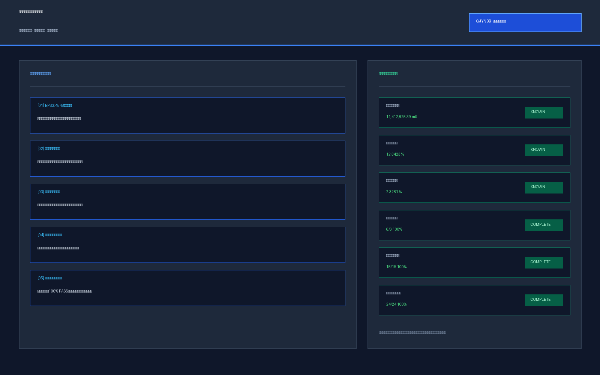

百年京张·AI智枢生态带
核心指标
三处重点区：三种不同的城市原型
以“共享测试庭院—清河水岸公共客厅—步行研发环”替代封闭园区逻辑。首层优先承载测试展示、标准咨询、共享会议和低碳基础设施体验。
用 5–10 分钟步行连续性连接高校、园区、社区；把开源发布、知识产权/法务、青年人才空间和日常生活服务嵌入可达首层。
围绕站点、产业、商业和公共空间组织四象限步行连续性，以国际路演、智能终端展示和公共服务激活站城界面。
五张核心图件

总览地图与三层范围

用地、建筑基底与更新结构

三处重点区空间动作

铁路遗产主轴与东西向慢行缝合

指标复算、来源与假设边界
10 张 AI 场景卡
高校师生和开发者发布模型、代码与研究成果，提供小型路演、可复用展陈和线下同行评审。
在受控环境开展红队、基准测试和安全展示，结果形成审计记录而不是“自动认证”。
为公共导视、环境感知和低延迟演示提供小型边缘节点，并与能源和散热条件联动。
提示坡度、临时障碍、拥挤和无障碍替代路径，服务老人、轮椅使用者、视障人士与访客。
面向智能体、智能终端和内容企业的短周期发布与交流空间，并与站点步行流线共享。
把雨洪、遮荫、步骑、户外协作和低功耗传感合并进连续公共空间。
将孵化、知识产权、法务、投融资和共享会议布置在可步行首层，缩短实验室—企业—街区距离。
用可视化方式解释授权、最小化、审计与退出机制，支持企业服务但不做未经授权的数据交易。
把教育、医疗导诊、法律信息、社区办事和生活服务嵌入日常街角，首先服务居民。
沿铁路遗产—开源社区—产业展示—站城客厅形成可步行活动链，平日仍是普通公共空间。
三类验证场景
测试定位漂移、断网、传感器离线和错误拥堵提示；非 AI 导视必须仍能完成基本通行。
测试异常输出、越权数据请求和高负载；要求人工一键停止、日志可追溯、测试域隔离。
测试教育/医疗/法律信息助手的低置信度与冲突答案；高影响事项必须升级人工。
审计边界
官方公告定义任务；provisional geometry 只做概念空间锚定，二者不混用。
不使用手机、不同意数据授权或系统离线的人，不得失去基本公共服务。
道路红线、权属、市政、防洪、消防、站体、正式控规和官方重点区 polygon 到位后再形成法定或工程判断。